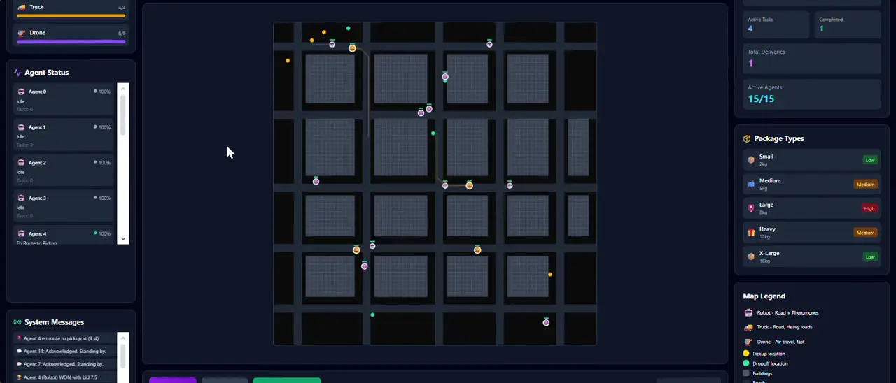
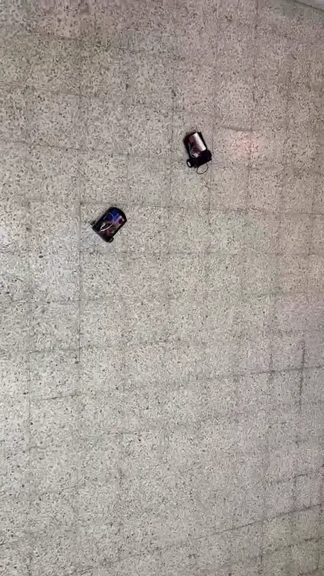
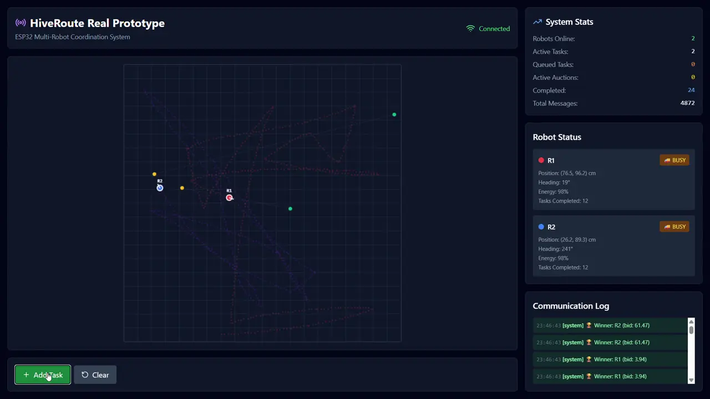

Project 01 · TSYP 13 · 2025
去中心化多机器人配送车队
AntRoute
Decentralized multi-agent fleet coordination with bio-inspired pheromone mapping and fairness-aware auctions.
问题The problem
Last-mile delivery accounts for more than half of total shipping cost.
Autonomous fleets can help, but most fleet systems use one central controller. If that controller fails, the whole fleet stops, and it becomes a communication bottleneck as the fleet grows. Many decentralized methods only optimize speed: some vehicles get overloaded while others sit idle, and outer neighborhoods get worse service.
方案What we built
AntRoute is a decentralized coordination system for mixed fleets of trucks, ground robots and drones. Vehicles communicate only with nearby vehicles and decide among themselves who handles each delivery.
- 500 mneighbour radio range
- 2 smessage interval
- ~6 sto detect a failed vehicle
- 30 sroute replanning cycle
核心思路Three ideas
01 · 数字信息素
Digital pheromone mapping
Each vehicle keeps a local map of delivery demand, congestion and priority, updated through decay, diffusion and exchanges with neighbours. Unlike classic Ant Colony Optimization, pheromone builds up where new requests are likely to appear, so the fleet positions itself before demand arrives.
02 · 公平性拍卖
Fairness-aware auctions
Vehicles bid on each task with a score weighing travel time, battery cost and fairness: how much work the vehicle has already done and how well the destination area has been served. Emergency medical deliveries skip the fairness rules and are assigned immediately.
03 · 协同故障恢复
Collaborative failure recovery
Neighbours detect a failed vehicle within about 6 seconds when its status messages stop, then run an emergency auction for its tasks. When 3 or more tasks are left without a vehicle, the fleet sets up a virtual swap station at a meeting point to hand packages over.
系统架构Each vehicle runs four layers at the same time
- L1Pheromone mappingdecay · diffusion · neighbour exchange
- L2Auction-based task allocationtime · battery · fairness score
- L3Adaptive routingmodified A* weighted by pheromone & congestion, replanned every 30 s
- L4Resilience monitoringheartbeat loss → emergency auction
从仿真到现实Sim-to-real · three videos

Simulation
Real world
Digital twin- Simulate 9 vehicles, 120 tasks, 2 × 2 km grid
- Build 2 ESP32 robots running C++ firmware
- Mirror live positions, energy and auctions
实验结果Result · Python discrete-event simulation
2 × 2 km urban grid · 9 vehicles (2 trucks, 5 ground robots, 2 drones) · 120 delivery tasks over 2 hours · 20 independent runs per scenario. Compared against a greedy nearest-vehicle method and a centralized optimal method (Hungarian algorithm).
- 29.4%lower CO₂ emissions than the greedy baseline
- 28.9 → 12.7%empty travel, cut by more than half
- 4.7 minto full recovery after two trucks failed at the same time
硬件原型Hardware prototype
To test the idea beyond simulation we built two small 3D-printed robots on wheels:
- Each robot: an ESP32, two DC motors and a motor driver, running C++ firmware written with Arduino.
- Robots connect over WiFi to a Node.js WebSocket server that starts each auction and relays messages between robots.
- Each robot calculates its own bid from its distance and energy level, drives to pickup and drop-off, estimates its position from wheel speeds and streams position, energy and pheromone data in real time.
- A React + HTML5 Canvas web simulator shows the fleet live, including auctions, pheromone trails, A* paths, failure injection and live metrics.
技术栈Tech
后续工作Future work
- Learn auction weights and pheromone settings automatically with reinforcement learning
- Coordinate fleets across several cities, with human drivers alongside autonomous vehicles
- Full-scale tests: a 5 × 5 km area, 35 vehicles, 8 hours